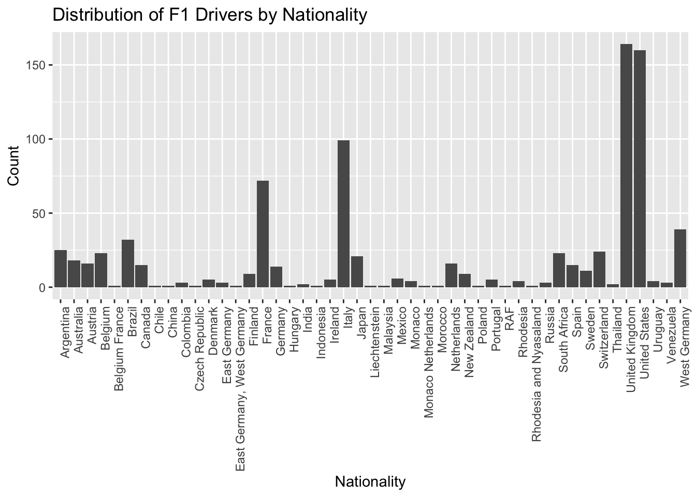
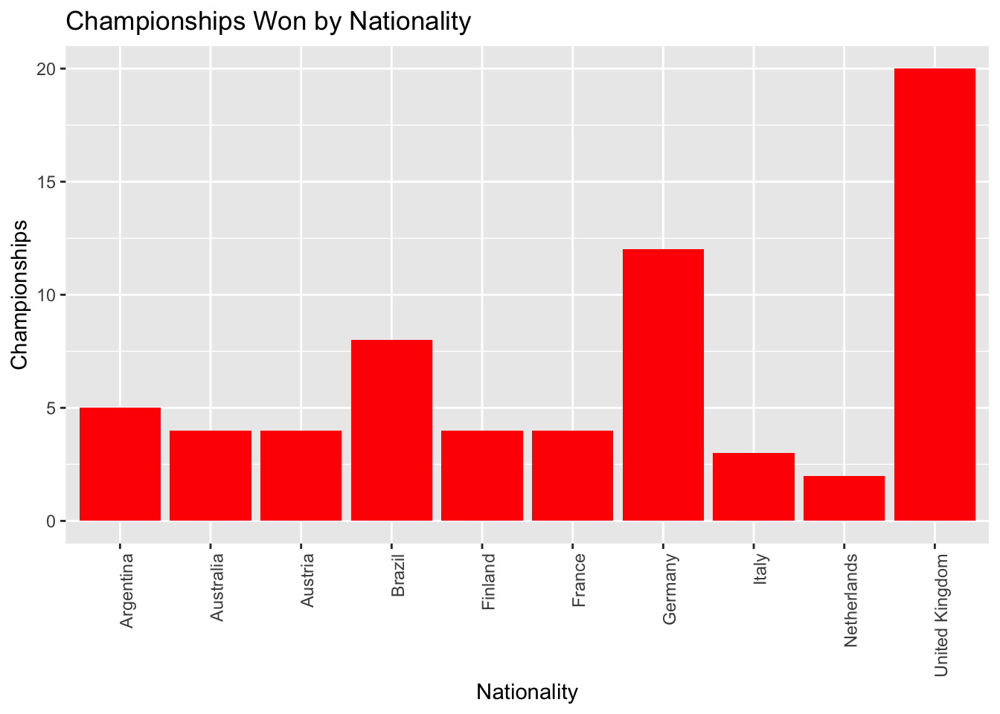
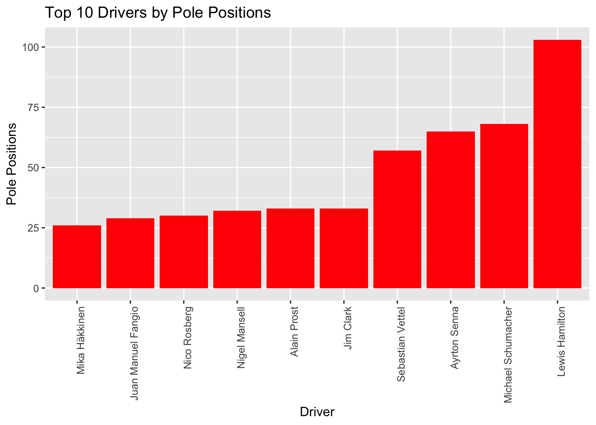
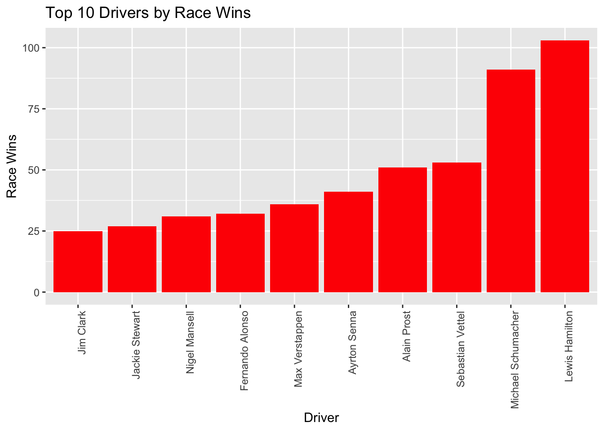
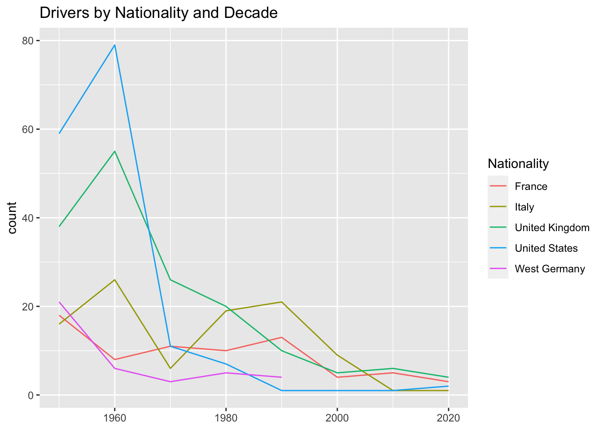
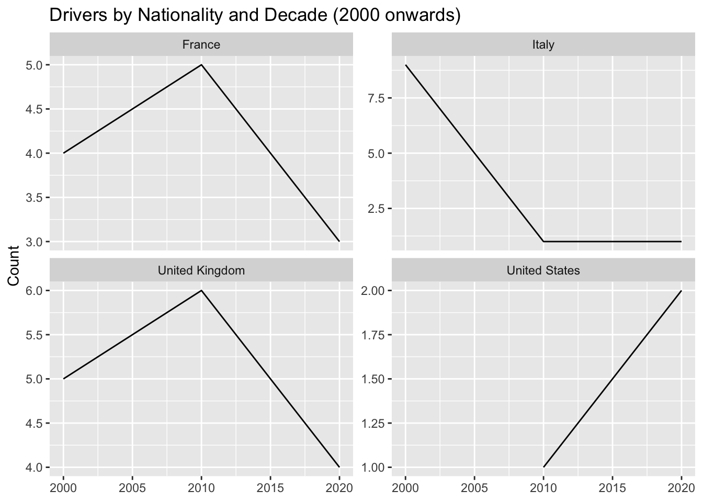
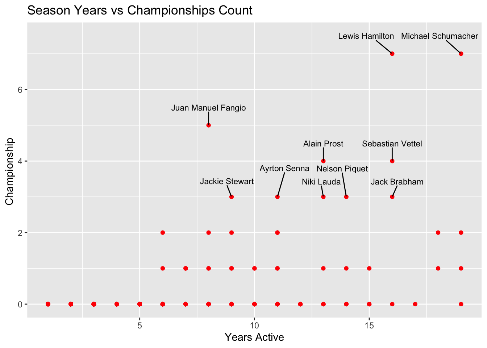
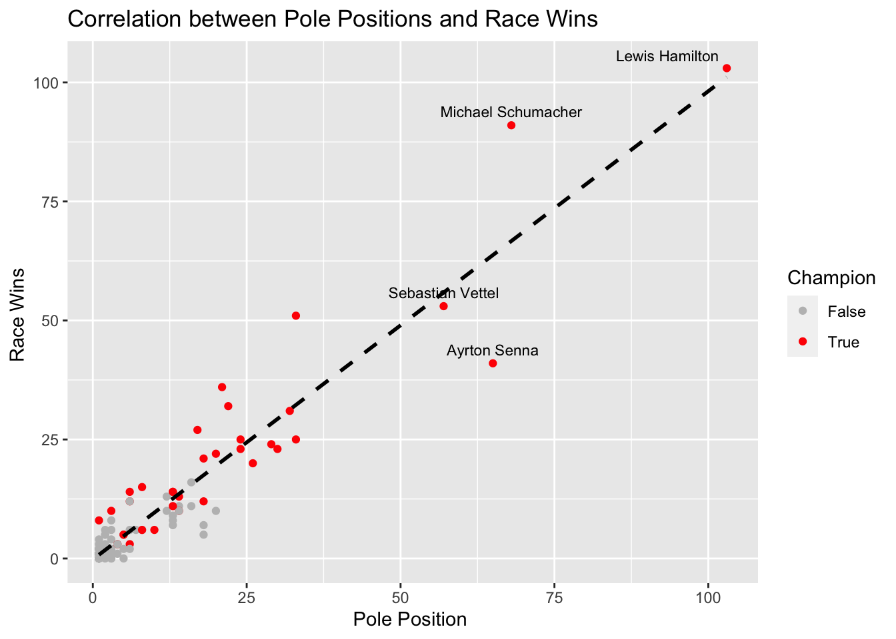
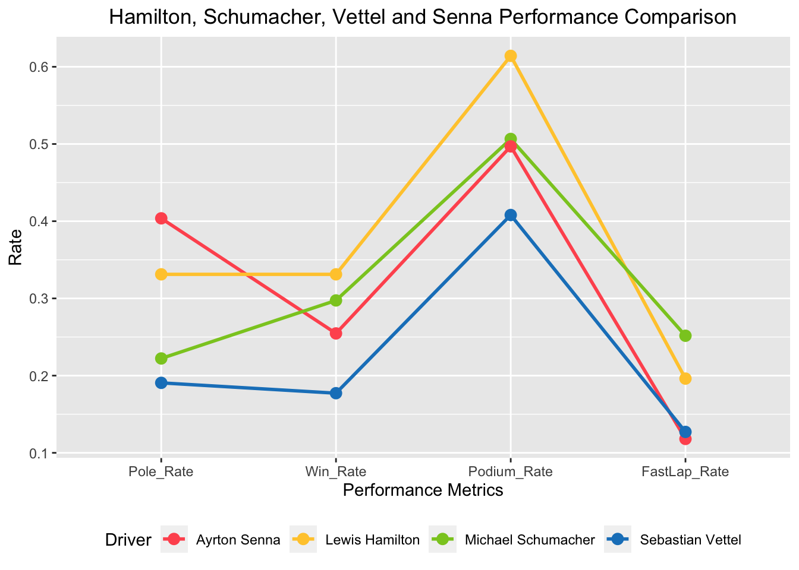

library(tidyverse)
library(ggplot2)
library(ggpubr)
library(reshape2)
library(ggrepel)
knitr::opts_chunk$set(echo = TRUE)Final Project: Formula 1
Final Project
F1
Formula 1 Performance Insights
My code
F1 Analysis
Known for its high-speed action and intense competition, Formula 1 is a thrilling motorsport that captivates fans worldwide. A driver’s performance is influenced by a variety of factors, which is essential for fans and teams alike. I am a very big fan of F-1 sport and thought it would be great to analyze the dataset of the sport I love.
This project will analyze a comprehensive dataset of Formula 1 drivers, focusing on their nationality, experience, and performance metrics. It is our objective to uncover patterns and trends that can help us better understand the factors influencing success in this highly competitive sport. The distribution of drivers by nationality, the relationship between championships and experience, and performance comparisons of legendary drivers will be explored through visualizations.
Read in Data
# Read the dataset
f1_data <- read.csv("Shantanu_FinalProjectData/F1DriversDataset.csv")
# Display the first few lines of the dataset
head(f1_data)We can see that the dataset is clean no further transformation is required.
Data Narrative
Data on Formula 1 drivers is sourced from Wikipedia which is a comprehensive collection of information about all Formula 1 drivers. The dataset is up-to-date as of the 2023 Bahrain Grand Prix. I have used the dataset from this Wikipedia page
In this dataset, the unit of analysis is a single entry row representing a distinct driver. This includes all performance indicators and characteristics associated with the driver’s Formula One racing career.
This dataset offers a thorough overview of the drivers’ careers and racing performances. This information enables a deeper understanding of the factors contributing to a driver’s success and aids in insights regarding their performance.
Exploring Patterns
I’ve been researching the patterns impacting a driver’s success. I examined the distribution of drivers by nationality, championships won by nationality, pole positions, and race victories. Furthermore, I intend to dig deeper into the data, including a comparison of drivers by nationality and decade, season years versus championship count, the correlation between pole positions and race wins, and a detailed performance comparison of legendary drivers Lewis Hamilton, Michael Schumacher, Sebastian Vettel, and Ayrton Senna.
The variables used in the code are Driver, Nationality, Years_Active, Championships, Pole_Positions, Race_Wins, Podiums, Fastest_Laps, Race_Starts, and Decade.
Variables Explained
I have provided an explanation for all the variables in the dataset because I think it is crucial to understand the terminologies in F1. Driver, Nationality, Years_Active, Championships, Pole_Positions, Race_Wins, Podiums, Fastest_Laps, Race_Starts, and Decade are the variables of main interest.
- Driver: The name of the driver.
- Nationality: The nationality of the driver.
- Seasons: The number of seasons the driver has participated in.
- Championships: The number of championships that the driver has won.
- Race_Entries: The number of races the driver has entered.
- Race_Starts: The number of races the driver has started.
- Pole_Positions: The number of times the driver has achieved the pole position (the position at the front of the starting grid).
- Race_Wins: The number of races the driver has won.
- Podiums: The number of times the driver has finished in the top three (i.e., on the podium).
- Fastest_Laps: The number of times the driver has achieved the fastest lap in a race.
- Points: The total number of points the driver has scored in their career.
- Active: A Boolean variable indicating whether the driver is currently active.
- Championship.Years: The years in which the driver won their championships.
- Decade: The decade(s) in which the driver was active or achieved significant results.
- Pole_Rate: The rate at which the driver achieves pole positions, calculated as the number of pole positions divided by the number of races.
- Start_Rate: The rate at which the driver starts races, calculated as the number of starts divided by the number of entries.
- Win_Rate: The rate at which the driver wins races, calculated as the number of wins divided by the number of starts or entries.
- Podium_Rate: The rate at which the driver finishes on the podium, calculated as the number of podium finishes divided by the number of starts or entries.
- FastLap_Rate: The rate at which the driver achieves the fastest lap, calculated as the number of fastest laps divided by the number of starts or entries.
- Points_Per_Entry: The average number of points scored per race entry.
- Years_Active: The number of years the driver has been professionally active.
- Champion: A Boolean variable indicating whether the driver has ever won a championship.
F1 Drivers and National Success
The provided statistics of the dataset are summaries of the different variables related to Formula 1 (F1) drivers. The dataset has 868 observations. Here are some notable statistics:
The “Championships” variable ranges from 0 to 7, meaning that at least one driver has won as many as 7 championships, while most drivers have not won any (median and mode of 0).
“Race Entries” range from 1 to 359 with an average of about 30, indicating the number of races the drivers entered.
“Race_Wins” has a maximum of 103 and a mean of approximately 1.248, which suggests a few drivers have many wins, but most have none or very few.
The “Points” variable, representing drivers’ points, ranges from 0 to 4415.5 with an average of around 55.85, indicating a wide spread in the points drivers have earned over their careers.
The “Decade” variable is a historical marker, with drivers from the 1950s to the 2020s.
# Descriptive statistics summary
descriptive_summary <- f1_data %>%
select( Race_Entries,Race_Wins, Years_Active, Championships, Points, Decade)
# Print the summary
summary(descriptive_summary) Race_Entries Race_Wins Years_Active Championships
Min. : 1.00 Min. : 0.000 Min. : 1.000 Min. :0.0000
1st Qu.: 2.00 1st Qu.: 0.000 1st Qu.: 1.000 1st Qu.:0.0000
Median : 7.00 Median : 0.000 Median : 2.000 Median :0.0000
Mean : 29.92 Mean : 1.248 Mean : 3.665 Mean :0.0841
3rd Qu.: 29.25 3rd Qu.: 0.000 3rd Qu.: 5.000 3rd Qu.:0.0000
Max. :359.00 Max. :103.000 Max. :19.000 Max. :7.0000
Points Decade
Min. : 0.00 Min. :1950
1st Qu.: 0.00 1st Qu.:1960
Median : 0.00 Median :1970
Mean : 55.85 Mean :1972
3rd Qu.: 8.00 3rd Qu.:1982
Max. :4415.50 Max. :2020 # Plot for number of drivers by nationality
ggplot(f1_data, aes(x = Nationality)) +
geom_bar() +
theme(axis.text.x = element_text(angle = 90, hjust = 1)) +
labs(title = "Distribution of F1 Drivers by Nationality",
x = "Nationality",
y = "Count")
This bar chart analysis aims to provide an overview of the number of drivers from different nationalities. We can identify that the UK, USA, Italy, Germany, and France are the countries that have produced the most Formula 1 drivers, thus hinting at possible factors such as the popularity of the sport or the availability of resources and training in those countries. They are among the highly developed nations in the world, thus as people say F1 is a sport for wealthy people is true.
# Plot for championships by nationality
championships_by_nationality <- f1_data %>%
group_by(Nationality) %>%
summarise(Championships = sum(Championships, na.rm = TRUE)) %>%
arrange(desc(Championships)) %>%
head(10)
ggplot(championships_by_nationality, aes(x = Nationality, y = Championships)) +
geom_bar(stat = "identity", fill = "red") +
theme(axis.text.x = element_text(angle = 90, hjust = 1)) +
labs(title = "Championships Won by Nationality",
x = "Nationality",
y = "Championships")
We can clearly see that drivers from the United Kingdom, Germany, and Brazil have a high success in Formula 1 based on the number of championships won by drivers of each nationality. It can indicate this country produces the most successful drivers in terms of championship victories. Germany and UK are known for their very good auto manufacturing industry thus this points out that to be successful in F1 you need to have the technical expertise as making one of the fastest cars is not easy.
Pole and Race Win Analysis
I have created 2 separate visualizations to analyze the performance of Formula 1 drivers. Each visualization focuses on a different aspect of their performance: pole positions, race wins. I wanted to find the most dominant drivers in the qualifying session. We see that Jim Clark, Sebastian Vettel, Ayrton Senna, Michael Schumacher, and Lewis Hamilton are the most dominant drivers in the history of F1. The highest number of pole positions of these drivers is indicative of their exceptional speed and skill in single-lap performance. What do you think Does having more pole position lead to more victories? let’s explore the data more to find the answer.
# Plot for top 10 drivers with most pole positions
top10_pole_positions <- f1_data %>%
arrange(desc(Pole_Positions)) %>%
head(10)
ggplot(top10_pole_positions, aes(x = reorder(Driver, Pole_Positions), y = Pole_Positions)) +
geom_bar(stat = "identity", fill = "red") +
theme(axis.text.x = element_text(angle = 90, hjust = 1)) +
labs(title = "Top 10 Drivers by Pole Positions",
x = "Driver",
y = "Pole Positions")
# Plot for top 10 drivers with most wins
top10_wins <- f1_data %>%
arrange(desc(Race_Wins)) %>%
head(10)
ggplot(top10_wins, aes(x = reorder(Driver, Race_Wins), y = Race_Wins)) +
geom_bar(stat = "identity", fill = "red") +
theme(axis.text.x = element_text(angle = 90, hjust = 1)) +
labs(title = "Top 10 Drivers by Race Wins",
x = "Driver",
y = "Race Wins")
F1 legends like Lewis Hamilton and Michael Schumacher underline this connection, as they translate pole positions into victories more often. However, exceptions like Sebastian Vettel showcase unique racing prowess; despite having fewer pole positions than Ayrton Senna, Vettel has clinched more victories, underlining his racecraft and strategic acumen even from non-pole starts.
Conversely, Jim Clark’s track record provides an interesting case study. While Clark excels at securing pole positions, his tally of race wins lags behind, placing him 10th in victories despite being 5th in pole positions. This divergence suggests that while Clark and his team displayed strong qualification performances, they faced challenges in converting these promising starts into race victories.
How has the diversity in F1 changed
Investigate the patterns in the nationalities of drivers through decades, paying particular attention to the top nations and how they have changed over time.
# Group by decade and nationality
grouped_data <- f1_data %>%
group_by(Decade, Nationality) %>%
summarise(count = n(), .groups = "drop")
# Find the top 5 nationalities
top_5_nationalities <- grouped_data %>%
group_by(Nationality) %>%
summarise(total_count = sum(count), .groups = "drop") %>%
arrange(desc(total_count)) %>%
head(5) %>%
pull(Nationality)
# Filter to the top 5 nationalities
grouped_data <- grouped_data %>%
filter(Nationality %in% top_5_nationalities)
# Plot the grouped data
ggplot(grouped_data, aes(x = Decade, y = count, color = Nationality)) +
geom_line() +
labs(title = "Drivers by Nationality and Decade", x = NULL, y = "count")
# Filter the data to include only the last 3 decades (2000 onwards)
grouped_data <- grouped_data %>%
filter(Decade >= 2000)
# Create a line plot for each nationality
ggplot(grouped_data, aes(x = Decade, y = count)) +
geom_line() +
facet_wrap(~ Nationality, scales = "free_y") +
labs(title = "Drivers by Nationality and Decade (2000 onwards)", x = NULL, y = "Count")
We can see from the graph that the dominance of the top 5 nations in F1 has reduced. We know that there is a limited number of driver seats which remains almost constant, thus we can infer that F1 has become a more diverse sport.
Is F1 becoming popular in the USA?
It is interesting to note there was a sharp decrease in the number of drivers from the USA till 2010 but after 2010 there is a steady rise. F1 is once again becoming popular in the USA!
Does Experience Count?
Examine the connection between a driver’s number of championship wins and the number of years they have been competing.
# Load required libraries
# Filter to drivers with 3 or more championships
tmp_df <- f1_data %>%
filter(Championships >= 3)
# Create scatter plot
ggplot(f1_data, aes(x = Years_Active, y = Championships)) +
geom_point(color = "red") +
geom_text_repel(data = tmp_df, aes(label = Driver), size = 3, nudge_y = 0.5, color = "black") +
labs(title = "Season Years vs Championships Count", x = "Years Active", y = "Championship ")
It’s interesting to see Schumacher has the most experience and Hamilton having less experience still has the same amount of championship wins. It would be hard to say Hamilton has better driver performance in F1 than Schumacher as they competed in different decades. But Vettel and Hamilton competed against each other in the same decades and we can say Hamilton is a better driver of the two.
We can not definitely say who is the best driver tough. It’s interesting to note, Juan Fangio seems to be an exceptional driver with 5 championship wins in just a span of 9 years.
Correlation: Pole Positions and Race Wins
# Load required libraries
# Filter to drivers with more than 0 pole positions
tmp_df <- f1_data %>%
filter(Pole_Positions > 0) %>%
select(Driver, Pole_Positions, Race_Wins, Champion)
# Create scatter plot
p <- ggplot(tmp_df, aes(x = Pole_Positions, y = Race_Wins, color = Champion)) +
geom_point() +
geom_smooth(method = "lm", se = FALSE, color = "black", linetype = "dashed") +
scale_color_manual(values = c("gray", "red")) +
labs(title = "Correlation between Pole Positions and Race Wins",
x = "Pole Position ",
y = "Race Wins ")
# Add labels to drivers with 50 or more pole positions
tmp_df <- tmp_df %>%
filter(Pole_Positions >= 50)
p + geom_text_repel(data = tmp_df, aes(label = Driver), size = 3, nudge_y = 0.5, color = "black")`geom_smooth()` using formula = 'y ~ x'
Visualizing the dataset we see there is a strong correlation between pole positions and race victories, although it’s not always a direct linear relationship.
Hamilton, Schumacher, Vettel, and Senna Comparison
Focusing on pole positions, victories, podium finishes, and fastest laps, compare the performance metrics of renowned drivers Lewis Hamilton, Michael Schumacher, Sebastian Vettel, and Ayrton Senna.
# Load required libraries
# Create a subset of the dataset including only the mentioned drivers
selected_drivers <- c('Lewis Hamilton', 'Michael Schumacher', 'Sebastian Vettel', 'Ayrton Senna')
selected_f1_data <- f1_data %>% filter(Driver %in% selected_drivers)
# Calculate performance rates
selected_f1_data$Pole_Rate <- selected_f1_data$Pole_Positions / selected_f1_data$Race_Starts
selected_f1_data$Win_Rate <- selected_f1_data$Race_Wins / selected_f1_data$Race_Starts
selected_f1_data$Podium_Rate <- selected_f1_data$Podiums / selected_f1_data$Race_Starts
selected_f1_data$FastLap_Rate <- selected_f1_data$Fastest_Laps / selected_f1_data$Race_Starts
# Reshape the data for plotting
df_melt <- melt(selected_f1_data, id.vars = 'Driver', measure.vars = c('Pole_Rate', 'Win_Rate', 'Podium_Rate', 'FastLap_Rate'))
# Create the plot
ggplot(df_melt, aes(x = variable, y = value, group = Driver, color = Driver)) +
geom_line(linewidth = 1) +
geom_point(size = 3) +
scale_color_manual(values = c('#ff595e', '#ffca3a', '#8ac926', '#1982c4')) +
labs(title = 'Hamilton, Schumacher, Vettel and Senna Performance Comparison',
x = 'Performance Metrics',
y = 'Rate') +
theme(legend.position = 'bottom',
plot.title = element_text(hjust = 0.5))
Sebastian Vettle’s numbers does not outperform any of the drivers on any performance rate except Fast Lap Rate. We can see that Ayrton Senna was great with Pole Positions and Michael Schumacher with Fastest Laps. Lewis Hamilton has a noticeable Podium rate.
Conclusion
According to the data, drivers from the United Kingdom, Germany, Italy, and Brazil have traditionally been the most successful in Formula 1 championship wins. Pole positions and race victories have a high association, with drivers like Lewis Hamilton, Michael Schumacher, Ayrton Senna, and Sebastian Vettel succeeding at both. However, individuals such as Sebastian Vettel demonstrate the importance of strategic skill in converting non-pole starts into victory. With less dominance from top nations and a greater worldwide presence, the sport is becoming more diversified over time. Following a period of decline, Formula 1 has had a recovery in the United States, as evidenced by an increase in the number of US drivers. The data also shows that experienced drivers have more championships.
Limitation
The analysis was limited to a few factors, including nationality, titles, pole positions, race victories, and performance rates. Additional variables such as team dynamics, vehicle performance, and team strategies could provide additional insights into success factors.
I would love to do further analyses of:
- Driver Comparison Across Eras: Analyzing and comparing the performance of drivers from various eras, taking into account factors such as technological developments and rule changes.
- Team Performance Analysis: Examining the impact of team relationships, vehicle performance, and technical partnerships on a driver’s success.